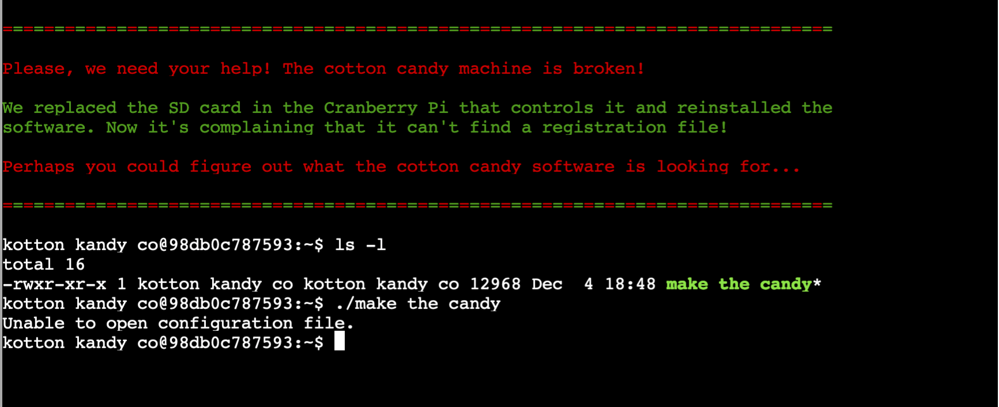

Strace Ltrace Retrace¶
Location: Kitchen
Tinsel Uptree asked for our help in order to repair the Cotton Candy Machine
that seemed to have a configuration error.
In exchange he said he would give us some hints in using Wireshark .. just in case we need it in some other challenge.
The cranberry this time was focused in particular on two commands really useful for diagnostic, instructional, and debugging tool in Linux systems.
Note
strace: In the simplest case strace runs the specified command until it
exits. It intercepts and records the system calls which are
called by a process and the signals which are received by a
process. The name of each system call, its arguments and its
return value are printed on standard error or to the file
specified with the -o option.
ltrace: ltrace is a program that simply runs the specified command until
it exits. It intercepts and records the dynamic library calls
which are called by the executed process and the signals which
are received by that process. It can also intercept and print
the system calls executed by the program.
Cotton Candy Machine¶

$ ltrace ./make_the_candy
fopen("registration.json", "r") = 0
puts("Unable to open configuration fil"...Unable to open configuration file.
) = 35
+++ exited (status 1) +++
it seems a registration.json file is needed, let’s create it
$echo "{}" > registration.json
relaunch
ltrace ./make_the_candy
fopen("registration.json", "r") = 0x556aaaead260
getline(0x7fffff5e80e0, 0x7fffff5e80e8, 0x556aaaead260, 0x7fffff5e80e8) = 3
strstr("{}\n", "Registration") = nil
getline(0x7fffff5e80e0, 0x7fffff5e80e8, 0x556aaaead260, 0x7fffff5e80e8) = -1
puts("Unregistered - Exiting."Unregistered - Exiting.
) = 24
+++ exited (status 1) +++
mmmhh .. it complains that the Registration key in the json is not found. Let’s add it to our file
$echo "{\"Registration\":\"test\"}"> registration.json
and relaunch
ltrace ./make_the_candy
fopen("registration.json", "r") = 0x5622c89dd260
getline(0x7ffc06416370, 0x7ffc06416378, 0x5622c89dd260, 0x7ffc06416378) = 24
strstr("{"Registration":"test"}\n", "Registration") = "Registration":"test"}\n"
strchr("Registration":"test"}\n", ':') = ":"test"}\n"
strstr(":"test"}\n", "True") = nil
getline(0x7ffc06416370, 0x7ffc06416378, 0x5622c89dd260, 0x7ffc06416378) = -1
puts("Unregistered - Exiting."Unregistered - Exiting.
) = 24
now, during execution it’s complaining that the value True wasn’t found for the “Registration” key. Add it
$echo "{\"Registration\":\"True\"}"> registration.json
and relaunch ..
$ltrace ./make_the_candy
fopen("registration.json", "r") = 0x563edde92260
getline(0x7ffea69777c0, 0x7ffea69777c8, 0x563edde92260, 0x7ffea69777c8) = 24
strstr("{"Registration":"True"}\n", "Registration") = "Registration":"True"}\n"
strchr("Registration":"True"}\n", ':') = ":"True"}\n"
strstr(":"True"}\n", "True") = "True"}\n"
getline(0x7ffea69777c0, 0x7ffea69777c8, 0x563edde92260, 0x7ffea69777c8) = -1
system("/bin/initialize_cotton_candy_sys"...
Launching...
Done. The Cotton Candy Machine is back to normal now.